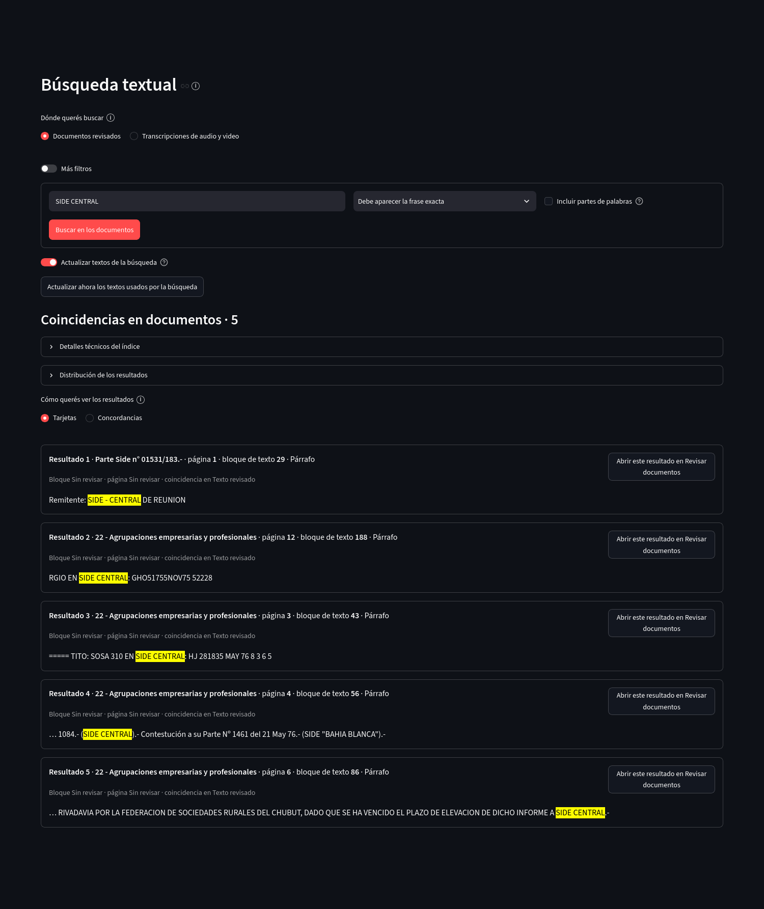
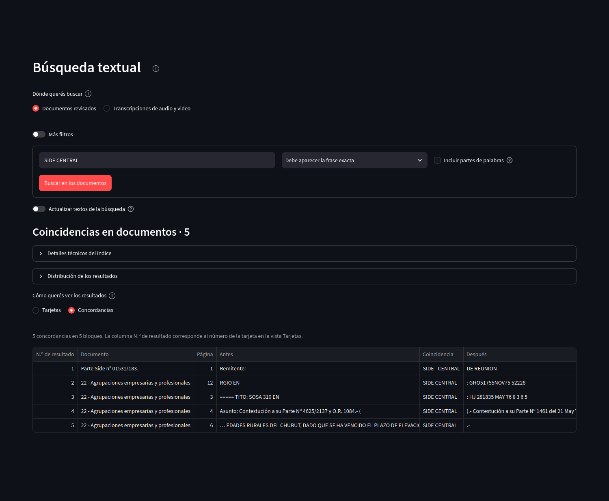
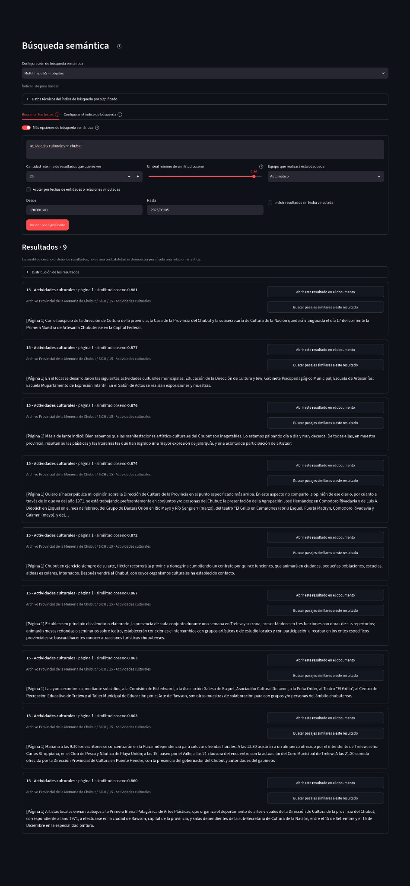

Exploración y descripción
Búsquedas
Archive Workbench ofrece dos formas distintas de recuperar texto. Búsqueda textual encuentra coincidencias literales. Búsqueda semántica compara representaciones numéricas del significado y ordena fragmentos por similitud.
Búsqueda textual en documentos revisados
La consulta puede exigir una frase exacta, admitir partes de palabras y combinar filtros. Los resultados en Tarjetas muestran el contexto de cada bloque y permiten abrirlo en Edición y anotación.
{kind=link}

Abrir captura completa
Concordancias
La vista Concordancias alinea el contexto anterior, la coincidencia y el contexto posterior para comparar rápidamente usos de una palabra o frase.
{kind=link}

Abrir captura completa
Búsqueda textual en transcripciones
Al elegir Transcripciones de audio y video, la búsqueda trabaja sobre segmentos temporales. Cada coincidencia conserva el medio, el intervalo, el estado de revisión y un acceso directo al tramo correspondiente en Audio y video.
Búsqueda semántica
La búsqueda semántica necesita un índice semántico, es decir, una colección local de vectores calculados a partir de los textos elegidos. Una consulta se compara con esos vectores y los resultados se ordenan por similitud coseno. Esa puntuación mide cercanía matemática dentro del índice; no es una probabilidad ni una decisión analítica.
{kind=link}

Abrir captura completa
Configuración del índice de búsqueda
La configuración define qué tipos de bloque y qué estados de revisión entran en el índice, además del nivel al que se agrupan los resultados. El índice es reconstruible: si cambia la configuración o cambia el texto incluido, puede volver a construirse sin reemplazar la base SQLite.